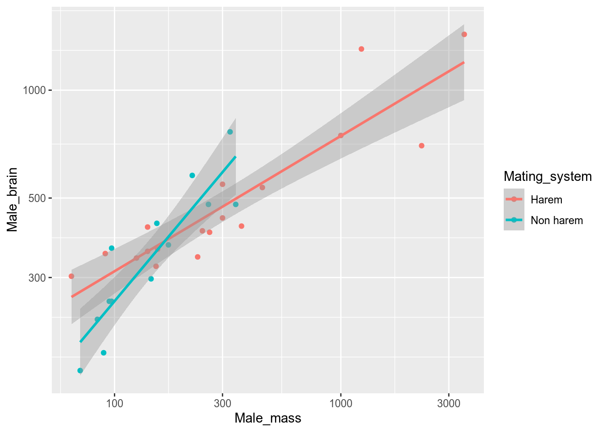
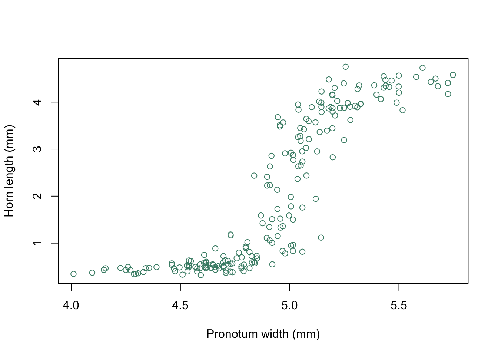

Chapter 9 R graphics I — the base graphics system
When it comes to drawing graphs, using R gives you the same benefits and costs that you get when analysing data. Everything is done through a command-line interface that can be difficult to use and sometimes counterintuitive. Whereas with other software you get a nice GUI and can just point and click until you achieve what it is you’re after, if you’re drawing graphs in R you might have to do some research first to find out how to draw the graph you’re after. That initial difficulty, however, is more than counterbalanced by the huge benefits of using R as your platform for data visualisation: R is almost infinitely flexible and can draw an extraordinary range of graphs, and you’ll find that in many cases the default options are very good starting points; unlike those in a certain popular spreadsheet application, for example, they have been designed by people possessed of both brains and colour vision. Finally, generating a script when you draw your graph means that you can easily return and edit your graph, and if you want to draw a similar graph with different data you can re-use your script with a few edits. Finally, you can use other peoples’ scripts. There are plenty of online resources with examples of graphs produced in R, and many of these have the code used to draw the graph associated with them. If you find an example of the sort of graph you want to make, you can use the code that’s already there as the basis of your own script. Have a look at the R Graph Gallery, a web resource set up for exactly this purpose, for an idea of the range of options available.
9.1 Base graphics versus ggplot2 versus lattice versus whaaat???
As a budding R user, your life has been made more complicated by the presence of a number of different options for creating graphics in R. Firstly, there is the graphics system which is built into R which is called base graphics. Despite the implication from the name that it’s a bit basic, this is a sophisticated and powerful system which can easily generate publication-quality graphs… which is sometimes a surprise to the ggplot2 fanbois. There are then two main alternative systems, lattice and ggplot2, which work very differently to the base system. Of these, ggplot2 has become the most well-known, and many people are now using it exclusively. I don’t think it’s possible to be a fully functional R user nowadays without knowing at least the fundamentals of ggplot2, so in this chapter and the next we’ll take an in-depth look at base graphics, and then we’ll move on to some ggplot2 basics.
9.2 Base graphics example: UFO reports again
We’ll start off with looking at an example of how to produce a graph in R. In the previous chapter we looked at a script which drew a graph for you: the plot of UFO reports by month since 1900. Let’s have another look at that script and go through the code. Here it is again.
# Script to read data on UFO reports and plot the data since 1900
# Audrey Bloggs 25th December 2022
# Load data from website
UFO <- read.csv("http://www.introductoryr.co.uk/UFO_data.csv",
stringsAsFactors = FALSE)
# Convert 'Reports' variable to date
UFO$Reports <- as.Date(UFO$Reports, format = "%d/%m/%Y")
# Trim off dates before 1900 which have a different format and convert to NA
UFO <- UFO[which((!is.na(UFO$Reports))), ]
# Check the data structure
str(UFO)
# Plot the data
plot(UFO$Count ~ UFO$Reports,
type = "l",
col = "steelblue",
xlab = "Year",
ylab = "Number of UFO reports by month",
main = "UFO reports by month since 1900")The first two thirds of the script are devoted to importing the data, cleaning it up and checking that everything’s gone well, and then we have the plot() function call which actually draws the graph. plot() is a particularly flexible and powerful R function, and it can produce a wide range of different outputs depending on the nature of the data or R objects that we feed to it. Our complete function call looks like this.
plot(UFO$Count ~ UFO$Reports,
type = "l",
col = "steelblue",
xlab = "Year",
ylab = "Number of UFO reports by month",
main = "UFO reports by month since 1900")Just like other functions in R we have a series of arguments within the brackets, with each argument separated from the previous one by a comma. I’ve got each argument after the first on a separate line, which makes it easier to see what’s happening in this piece of code. The first argument that we’re giving to our plot() function tells it where to find the data to plot. In this case we’re giving it two data variables, a numeric variable, UFO$Count and a date variable UFO$Reports, and they are separated by a tilde ~. The tilde is an important symbol in R. This is the first time you’ve met it, but you’ll see it a lot in defining formulas for statistical tests. You can think of it as meaning “is explained by” or as something which separates a dependent variable from an independent variable, or a response variable from an explanatory variable: if we think that one variable depends on the value of the other then the former would be the dependent or response variable and the latter the independent or explanatory variable. In this case the number of UFO reports depends on the year: there is clearly a big effect of year in determining the number of reports logged, but the year deosn’t depend on the number of reports. No-one is going to say “there have been 215 UFO reports, so we will call this year 2003”. Conventionally we put a dependent variable on the y-axis and an independent one on the x-axis, and this is what R will do.
If we just use the first argument, UFO$Count ~ UFO$Reports and none of the rest then R will go for the default option for a graph with continuous variables for both the x- and the y-axis, and draw a scatterplot with each data point represented by an open circle.

Figure 9.1: Scatterplot of UFO reports by year
That’s not really what we’re after and doesn’t really show the important patterns in the data. We can tell R to draw a line connecting each data point instead of the scatterplot by adding the type = 'l' argument:
Figure 9.2: Line plot of UFO reports by year
which gives something much closer to what we’re after. We can change the colour of the line using the col = "steelblue" argument, xlab = "Year" sets the axis label for the x-axis, ylab = "Number of UFO reports by month" does the same for the y-axis and finally main = "UFO reports by month since 1900" gives us a main title for the graph…
plot(UFO$Count ~ UFO$Reports,
type = "l",
col = "steelblue",
xlab = "Year",
ylab = "Number of UFO reports by month",
main = "UFO reports by month since 1900")… and with remarkably little fuss we have a nice, publication quality graph displaying our data. This example shows us the basics of producing graphs in R: the plot() function produces a particular kind of graph depending on the data that you feed it, but you can then modify the look of the graph and change things like the axis labels by using further arguments to your plot() function call. It’s worth pointing out here that these arguments are often called graphical parameters when we’re referring to arguments that change the appearance of a graph, but they work in the same way as arguments for other types of function. We’ll talk a little more about graphical parameters later on in the chapter.
9.3 Basic Scatterplots
Let’s look at scatterplots in rather more detail. We’ll draw a scatterplot and then specify the shape and colour of the datapoints according to some classification, then finally we’ll add some fitted lines to our data. The dataset we’ll be using is from a paper published in the Journal of Evolutionary Biology by John Fitzpatrick and coauthors1 on the subject of how brain size in pinnipeds (seals, walruses and sea lions) relates to their mating system. The fundamental question they were addressing is whether brain size varies between seals where the males defend groups of females (“harems”), and species where males pair up with single females.
The dataset is online and you can load it straight into R from the web by running this line of code.
pinniped <- read.csv("http://www.introductoryr.co.uk/Pinniped_brains.csv", stringsAsFactors = FALSE)As always, we want to know whether our dataset has imported properly so we check using the str() function.
## 'data.frame': 33 obs. of 11 variables:
## $ Species : chr "Monachus schauinslandi" "Monachus monachus" "Mirounga angustirostris" "Mirounga leonina" ...
## $ Male_brain : num 370 480 700 1431 535 ...
## $ Female_brain : num NA 480 640 899 638 ...
## $ Male_mass : num 173 260 2275 3510 450 ...
## $ Female_mass : num 272 275 488 566 447 ...
## $ Harem : num 1 1 13 48 3 1 1 1 1 1 ...
## $ Small_intestine: int 1030 870 3820 12100 2700 790 2530 2190 2520 2164 ...
## $ Gestation : int 330 330 230 225 263 248 255 276 234 270 ...
## $ Lifespan : num 360 284 244 276 300 ...
## $ Lactation : int 38 42 26 23 50 30 17 29 4 24 ...
## $ Dive_duration : num 12 NA 62 120 82 9.8 10.8 NA 52 25 ...All good: we have quite a few variables including a character vector of species names, male and female brain mass (g), male and female body mass (Kg) and the average harem size, where 1 indicates each male is only mating with a single female at a time and values greater than 1 tell us that males, if they are able, will guard females in groups.
Let’s plot male brain mass against body mass to start with.
Figure 9.3: Brain mass versus body mass for 33 species of male pinniped
This plot is showing us that there is some sort of relationship between brain mass and body mass, but it is difficult to tell much from it because both the brain mass and body mass data are squished down into the bottom left corner. This is because both of these variables are positively skewed: there are lots of seals and their relatives with body mass between about 50 and about 500Kg, but then there are a few which are much heavier up to Mirounga leonina, the Southern Elephant Seal, which is an absolute chonker with males weighing in at about 3.5 metric tonnes. We need to do something to spread the data out more evenly, and usually when dealing with this sort of positively skewed data we’d plot the log transformed data rather than the raw data. There are two easy ways to do this in R: you can generate new variables which are the logged values that you want to plot, or you can use an argument within the plot() function call to tell it to plot the data on a log scale.
Here is the first option.
#Generate new variables with the log transformed data
log_Male_brain <- log(pinniped$Male_brain)
log_Male_mass <- log(pinniped$Male_mass)
#plot our new variables
plot(log_Male_brain~log_Male_mass)
Figure 9.4: Log brain mass versus log body mass for 33 species of male pinniped
You can see that log transforming these data gives us a nice looking plot with the data spread out so that we can see any patterns that might be there. How about the other alternative?
Figure 9.5: Brain mass versus body mass for 33 species of male pinniped, plotted on log scaled axes
The positioning of the points is exactly the same, but the numbers on the axes are different. What’s happened here is that instead of log-transforming the data we;’ve plotted the untransformed data on axes that are on log scales —– you can see this by looking at the numbers on the x-axis in particular, where the distance from 100 to 200 is about the same as the distance from 1000 to 2000. If you only wanted the y-axis plotted on a log scale you could use log = "y" and if you only wanted the x-axis on a log scale then log = "x" would do.
Which of these options for plotting logged data you use is up to you and the best option will depend on the context. I generally prefer the latter, since you retain the original units for your axes which makes it easier to understand what each data point represents.
Talking of units, the axis labels on our plot are not especially informative, so let’s fix that by telling the plot() function what we want our axis labels to be. We can do that using the xlab = and ylab = arguments.
plot(pinniped$Male_brain ~ pinniped$Male_mass,
log = "xy",
xlab = "Body mass (Kg)",
ylab = "Brain mass (g)")Figure 9.6: Brain mass versus body mass for 33 species of male pinniped plotted on log scaled axes
Good. This is now looking like a graph that we might start to think about publishing. You can see how the default options for things like axis limits and plot symbols are clean and well chosen in base R graphics. We’ve not finished though: we want to change our graph so that the viewer can differentiate between species with “harem” mating systems and other species.
The Harem variable in our data set tells us the average size of the group of females that a male will defend for each species, so if Harem = 1 then we can classify a species as a non-harem one, and if Harem > 1 then we can classify a species as one with a harem mating system. We can then use subscripting to allocate a specific colour or plot symbol to the data points for harem or non-harem species.
9.4 Plot symbols
We can get R to draw different plot symbols by using the pch = graphical parameter. R has a set of built in symbols that are represented by the numbers 1 to 25. Here they are: the code used to draw this figure is at the end of this chapter.

Figure 9.7: Plot symbols used in R
So if we’d like to plot our data with filled circles instead of open ones, we can set pch = 16 as one of our graphical arguments, like this.
plot(pinniped$Male_brain ~ pinniped$Male_mass,
log = "xy",
xlab = "Body mass (Kg)",
ylab = "Brain mass (g)",
pch = 16)
Figure 9.8: Brain mass versus body mass for 33 species of male pinniped plotted on log scaled axes using closed circles as plot symbols
9.5 Colours
The colour or colours that your plot symbols are drawn with (or the colours of the boxes in a boxplot, or the bars in a histogram or bar plot) can be set in R by using the col parameter, and other parameters such as bg, col.axis, col.lab set the colours for other parts of the plot: these examples will allow you to change the background colour and the colours of the axes and the axis labels respectively. For a full list of these take a look at ?par which will bring up a description of all of the graphical parameters. The actual colours to be used can be named in a confusing variety of different ways, but for the beginner the easiest thing to do is simply to use the name: “red”, “blue”, “green” or “lightblue” or “darkgreen”. In fact, R has a rather surprising number of named colours that you can use, and an even more surprising range of names, from “aliceblue” through “darkgoldenrod2”, “hotpink1”, “lemonchiffon3” to “tomato4”. The function colours(), or colors() if you prefer the American spelling will produce a list of all 657 named colours in R. Appendix 1 has a series of charts showing each colour with its name.
If you’re familiar with how colours are described in computers then you can use the RGB hexadecimal code for the colour: this begins with a hash symbol and then has two numbers for the red channel (computers think in hexadecimal to each one is 0-9 and the A-F), two for the green and two for the blue, so #0000FF is blue, #FF0000 is red, #000000 is black and #FFFFFF is white. We’ll talk about using these hex codes a little later when we discuss using alpha channels to make elements of your graph semi-transparent.
If we wanted to change the colours of our plot symbols from the default black option we just need to add another argument specifying the exact colour we want. If we wanted aquamarine4 as our plot colour then our code would look like this.
plot(pinniped$Male_brain ~ pinniped$Male_mass,
log = "xy",
xlab = "Body mass (Kg)",
ylab = "Brain mass (g)",
pch = 16,
col = "aquamarine4")
Figure 9.9: Brain mass versus body mass for 33 species of male pinniped plotted on log scaled axes with both plot symbol and colour specified
9.6 Plotting multiple symbols or colours
One of the most important uses of colour or plot symbols is to distinguish between different classes of data, and this is something that we can do in R: if we have a variable which classifies our data into groups, then we can use that to tell R which colours or symbols to use. Using our data on pinnipeds, we can divide our species into harem breeders, where males defend groups of more than one female during the mating season, and non-harem breeders where each male is only associated with a single female. The variable Harem gives us the number of females that a male might be associated with and we can use this to set up a new factor called Mating_system which has two levels, Harem for males who will seek to defend more than one female and Non harem for males who only associate with a single female at a time.
Here we’ve used the ifelse() function which takes a logical statement, in this case whether the value of Harem is equal to one, and returns one value, in this case "Non harem", if the logical statement is true and a second value ("Harem") if the statement is false. Now we can plot our data and indicate to the viewer which mating system is associated with each data point. Firstly we’ll do this with colours, and then with different plot symbols.
To indicate how our points are classified we need a vector of colours for R to use in our plot. This example has only two but if you have more groups you just need more colours in your vector.
Now we have a vector of colours and a factor which classifies our data. How do we use these to generate a plot with each data point colour coded by the factor levels? The answer lies in some clever use of subscripts. colours is a character vector and we can retrieve the first or second value by using a subscript:
## [1] "chocolate2"returns the second value in the vector. If we have a second vector of numbers which correspond to the useable subscripts for our colours vector then we can use this to generate a new vector of colour names:
## [1] "aquamarine4" "aquamarine4" "chocolate2" "aquamarine4" "chocolate2"
## [6] "chocolate2" "aquamarine4"which returns a vector with seven colour names, each corresponding to the relevant value in our example vector. Now let’s go back to our Mating_system factor. This has two levels, Harem and Non harem and these levels will be coded by R as 1 for Harem, which coes first alphabetically, and 2 for Non harem which comes second. If, therefore, we use Mating_system as a subscript for colours it should return "aquamarine4" for each value of Non harem in Mating_system and "chocolate2" for each value of Harem. Let’s try that out.
## [1] "chocolate2" "chocolate2" "aquamarine4" "aquamarine4" "aquamarine4"
## [6] "chocolate2" "chocolate2" "chocolate2" "chocolate2" "chocolate2"
## [11] "aquamarine4" "chocolate2" "chocolate2" "chocolate2" "chocolate2"
## [16] "chocolate2" "chocolate2" "chocolate2" "aquamarine4" "aquamarine4"
## [21] "aquamarine4" "aquamarine4" "aquamarine4" "aquamarine4" "aquamarine4"
## [26] "aquamarine4" "aquamarine4" "aquamarine4" "aquamarine4" "aquamarine4"
## [31] "aquamarine4" "aquamarine4" "aquamarine4"Et voilà! we can generate a vector of colours which we can include in our plot() function call with only a very brief piece of code.
plot(pinniped$Male_brain ~ pinniped$Male_mass,
log = "xy",
xlab = "Body mass (Kg)",
ylab = "Brain mass (g)",
pch = 16,
col = colours[Mating_system])
Figure 9.10: Brain mass versus body mass for 33 species of male pinniped plotted on log scaled axes, orange symbols indicate non-harem breeders and green indicate harem breeders
There we are. Now, if I were given chocolate that colour to eat I’d be rather dubious, but aside from that we’ve achieved our goal.
We can vary the plot symbol using the exact same logic. If we wanted to indicate mating system by using a filled circle (plot symbol 16) for Harem and a filled triangle (plot symbol 17) for Non harem we need to set up a vector containing these two numbers:
and then we can use this in our plot() function call with a subscript in the same way that we did for colours.
plot(pinniped$Male_brain ~ pinniped$Male_mass,
log = "xy",
xlab = "Body mass (Kg)",
ylab = "Brain mass (g)",
pch = symbols[Mating_system])Figure 9.11: Brain mass versus body mass for 33 species of male pinniped plotted on log scaled axes, triangles indicate non-harem breeders and circles indicate harem breeders
9.7 Colour palettes in R
You don’t have to choose your own colours for your plots. R has a number of built-in selections of colours which are known as “palettes”. There is a default palette which is a vector of 8 different colours which can be found using the palette() function.
## [1] "black" "red" "green3" "blue" "cyan" "magenta" "yellow"
## [8] "gray"If you’re just interested in a quick look at your data then you can just use code like this where I’ve specified our Mating_system factor for the col = argument, and R will use the first two colours in the default palette.
plot(pinniped$Male_brain ~ pinniped$Male_mass,
log = "xy",
xlab = "Body mass (Kg)",
ylab = "Brain mass (g)",
pch = 16,
col = Mating_system)
Figure 9.12: Brain mass versus body mass for 33 species of male pinniped plotted on log scaled axes, colour coded for mating system
That doesn’t look too bad but you might not want to use it for a presentation or a publication. The default R palette has something of a bad reputation and the potential combinations of bright red, green and blue is enough to give most people a headache, not to mention the possible problems for people with red-green colourblindness. There will be a new and less offensive default palette coming to R soon but at the time of writing this hasn’t been implemented yet. The good news though is that there are a lot of other palettes now available in a base R installation as part of the grDevices package, and there are also some really nice ones available as installable packages. The ncl.pals() function will give you a list of what’s available in your base installation so long as it’s a fairly recent one.
## [1] "Pastel 1" "Dark 2" "Dark 3" "Set 2"
## [5] "Set 3" "Warm" "Cold" "Harmonic"
## [9] "Dynamic" "Grays" "Light Grays" "Blues 2"
## [13] "Blues 3" "Purples 2" "Purples 3" "Reds 2"
## [17] "Reds 3" "Greens 2" "Greens 3" "Oslo"
## [21] "Purple-Blue" "Red-Purple" "Red-Blue" "Purple-Orange"
## [25] "Purple-Yellow" "Blue-Yellow" "Green-Yellow" "Red-Yellow"
## [29] "Heat" "Heat 2" "Terrain" "Terrain 2"
## [33] "Viridis" "Plasma" "Inferno" "Dark Mint"
## [37] "Mint" "BluGrn" "Teal" "TealGrn"
## [41] "Emrld" "BluYl" "ag_GrnYl" "Peach"
## [45] "PinkYl" "Burg" "BurgYl" "RedOr"
## [49] "OrYel" "Purp" "PurpOr" "Sunset"
## [53] "Magenta" "SunsetDark" "ag_Sunset" "BrwnYl"
## [57] "YlOrRd" "YlOrBr" "OrRd" "Oranges"
## [61] "YlGn" "YlGnBu" "Reds" "RdPu"
## [65] "PuRd" "Purples" "PuBuGn" "PuBu"
## [69] "Greens" "BuGn" "GnBu" "BuPu"
## [73] "Blues" "Lajolla" "Turku" "Blue-Red"
## [77] "Blue-Red 2" "Blue-Red 3" "Red-Green" "Purple-Green"
## [81] "Purple-Brown" "Green-Brown" "Blue-Yellow 2" "Blue-Yellow 3"
## [85] "Green-Orange" "Cyan-Magenta" "Tropic" "Broc"
## [89] "Cork" "Vik" "Berlin" "Lisbon"
## [93] "Tofino" "ArmyRose" "Earth" "Fall"
## [97] "Geyser" "TealRose" "Temps" "PuOr"
## [101] "RdBu" "RdGy" "PiYG" "PRGn"
## [105] "BrBG" "RdYlBu" "RdYlGn" "Spectral"
## [109] "Zissou 1" "Cividis"This long list is in fact an implementation of the colour palettes available in the colorspace package for R, and these are themselves a mix of palettes from a variety of sources: for example the Viridis palette is from the eponymous Viridis package.
I personally find a lot of these built-in colour palettes to be rather uninspiring and I prefer to use palettes from the RColorBrewer package. RColorBrewer gives you an R implementation of the palettes available on the Color Brewer website. The website is oriented towards cartographers but the palettes are useful for all sorts of data visualisations. The package will need to be installed if you don’t already have it so you’d need to run install.packages("RColorBrewer").
The palettes in RColorBrewer and elsewhere are usually grouped into “sequential”, “diverging” and “qualitative” palettes. Sequential ones are suited for data on an ordered scale and tend to have a single underlying colour which is presented at varying degrees of lightness. Here are the available palettes from RColorBrewer:
Diverging palettes, like the sequential ones are suited for data where there is some sort of order but these palettes have contrasting colours for high and low values and (usually) pale shades for mid-range values.

Finally, qualitative palettes do not have any implied ordering and are best for representing data where the differences between data points are themselves not ordered.

These palettes have a variety of numbers of colours, and chances are that you’ll want to use a different number from the default. You can’t use more than the maximum, but you can easily generate and visualise sub-palettes with fewer colours present. As an example, if you wanted a palette based on the Dark2 palette but with seven colours only you can use the display.brewer.pal() function to visualise it and the brewer.pal() function to generate a new object with the appropriate hex codes.

giving us a character vector called palette1 with seven elements which are the hex codes for our colours.
## [1] "#1B9E77" "#D95F02" "#7570B3" "#E7298A" "#66A61E" "#E6AB02" "#A6761D"Let’s use this palette to plot a graph. The World_bank_data_2014.csv dataset contains a wide variety of data on economics and development measured in 2014 for 186 countries around the World, as published by the World Bank. Two variables are the percentage of the surface area which are classified as forested (Forest_area) and the annual rainfall in mm (Precipitation). Let’s plot these out, and colour code our data points by region (which happens to have seven values…)
First of all we need to load the data.
## 'data.frame': 186 obs. of 22 variables:
## $ Country_Name : Factor w/ 186 levels "Afghanistan",..: 1 5 2 4 176 7 8 6 9 10 ...
## $ Country_Code : Factor w/ 186 levels "AFG","AGO","ALB",..: 1 2 3 4 5 6 7 8 9 10 ...
## $ Region : Factor w/ 7 levels "East Asia & Pacific",..: 6 7 2 2 4 3 2 3 1 2 ...
## $ Income_group : Factor w/ 4 levels "High income",..: 2 3 4 1 1 4 4 1 1 1 ...
## $ Population : int 33370794 26941779 2889104 79213 9214175 42669500 2912403 92562 23475686 8546356 ...
## $ Land_area : num 652860 1246700 27400 470 71020 ...
## $ Forest_area : num 2.07 46.51 28.19 34.04 4.53 ...
## $ Precipitation : int 327 1010 1485 NA 78 591 562 1030 534 1110 ...
## $ Population_density : num 51.1 21.6 105.4 168.5 129.7 ...
## $ Capital_lat : int 33 -13 41 43 24 -34 40 17 -35 47 ...
## $ GNP_per_Cap : int 630 5010 4540 NA 44330 12350 4140 12730 65150 50370 ...
## $ Population_growth : num 3.356 3.497 -0.207 -1.951 0.177 ...
## $ Cereal_yield : num 2018 888 4893 NA 12543 ...
## $ Under_5_mortality : num 73.6 92.9 10 3.4 7.9 12 15.1 7.6 4 3.8 ...
## $ Renewables : num 19.314 50.797 38.69 19.886 0.146 ...
## $ CO2 : num 0.294 1.29 1.979 5.833 22.94 ...
## $ PM25 : num 59 33 18.9 10.8 38 ...
## $ Women_in_parliament : num 27.7 36.8 20 50 17.5 36.6 10.7 11.1 26 32.2 ...
## $ GINI_index : num NA NA NA NA NA 41.7 31.5 NA 35.8 30.5 ...
## $ Govt_spend_education : num 3.7 NA NA 3 NA ...
## $ Secondary_school_enrolment: num 52.6 NA 97.7 NA NA ...
## $ School_gender_parity : num 0.654 NA 0.977 NA NA ...Now that we have our data a little housekeeping is in order. We’re going to want to add a legend ot our plot in the right hand margin so we need to adjust the sizes of the figure margins using par(mar = c(5,4,4,12)). The vector of numbers is the size of the margins in the order of bottom, left, top, right and it would normally be set at c(5,4,4,2) + 0.1 so we’re making the right hand margin much bigger than it would normally be.
par(xpd = TRUE) sets R so that we can plot our legend in the margin: normally in base graphics it would be restricted to inside the plotting area.
Now that we’ve done that we can plot our graph, add the legend and then finally set our two parameters back to their default values. It’s always a good idea to do this because if you don’t then you’ll inevitably forget and then you’ll end up wondering why your graph looks odd.
par(mar = c(5,4,4,13))
par(xpd = TRUE)
plot(WB$Forest_area ~ WB$Precipitation,
col = palette1[WB$Region],
pch = 16,
xlab = "Precipitation (mm per year)",
ylab = "Forest area (%)")
legend(x=3500, y=80,
col = palette1,
pch = 16,
legend = levels(WB$Region),
bty = "n",
title = "Region")Before we look at our final plot, let’s just run through those plot() and legend() function calls and see what all the arguments do.
plot(WB$Forest_area ~ WB$Precipitation,
col = palette1[WB$Region],
pch = 16,
xlab = "Precipitation (mm per year)",
ylab = "Forest area (%)")This is the function call that plots the graph. We start off by giving plot() the names of two continuous variables (Forest_area and Precipitation), both from the WB data frame. These are separated by a tilde ~ which means “the one on the left of the tilde as explained by the one on the right”… so plot() will draw us a scatterplot with Forest_area on the y-axis and Precipitation on the x-axis.
Next comes col = palette1[WB$Region], which determines the colours used in the plot. We’ve already set up palette1 which is a vector of seven colours derived from the RColorBrewer Dark2 palette. Using the factor Region from the WB data frame as a subscript generates a vector of colours corresponding to the factor levels, as we saw above. Finally we have three fairly simple arguments. pch = 16 sets the plot symbol to be a filled circle, and xlab = and ylab = set the two axis labels.
This plots our graph. Moving on to the legend() function call, this is one of a number of R functions which you can use to draw things like lines, text or more data on to an existing graph and we’ll discuss these in detail in the next chapter. For the moment, I’ll just quickly run you thorugh what the various arguments are doing.
legend(x=3500, y=80,
col = palette1,
pch = 16,
legend = levels(WB$Region),
bty = "n",
title = "Region")The x=3500, y=80 arguments are telling R where to put the top left corner of the legend. The units are the same as those that the graph is plotted in, which makes life a bit easier. Note that 3500 is outside the range of the x-axis, so we’re asking R to plot the legend next to the graph rather than inside the graph box, which is why we have to set par(xpd = TRUE).
col = palette1 tells legend() which colours to include, and pch = 16 tells it which plot symbol to use. legend = levels(WB$Region) is the code which tells legend() what text to use. In this case the levels() function will give us the names of the levels of the WB$Region factor, and this is the information we’d like on the legend. Two final arguments are bty = "n" — bty stands for “box type” and setting this to “n” means that there isn’t a box drawn around the legend, and finally title = "Region" specifies a title for the legend.
Here’s the final graph:

9.8 Adding elements to an existing graph
All the examples we’ve looked at in detail so far use arguments within the plot() function call to change the appearance of our graph. R also has functions which can draw new elements onto existing graphs. These include:
| Function | Purpose |
|---|---|
points() |
Draws points onto a plot |
lines() |
Draws lines |
abline() |
Draws a line specified by intercept and slope |
polygon() |
Draws a shape |
arrows() |
Draws arrows on a plot |
text() |
Adds text |
mtext() |
Adds text in the plot margins |
legend() |
Adds a legend |
axis() |
Adds an axis |
title() |
Adds a title or subtitle |
These functions will all add elements to the plot which is currently displayed in the graphics window, so you have to be a little careful about where you put the code. The best option is to use a script and have these functions directly after the plot() function call. Let’s look at some examples.
9.9 Adding a legend
Our plot needs a legend to let the reader know what the colour coding means. As we can see above, there is a function called legend() which will do this for us.
plot(pinniped$Male_brain ~ pinniped$Male_mass,
log = "xy",
xlab = "Body mass (Kg)",
ylab = "Brain mass (g)",
pch = 16,
col = colours[Mating_system])
legend("topleft",
legend = c("Harem", "Non harem"),
col = colours,
pch = 16,
title = expression(bold("Mating system")),
bty = "n")Figure 9.13: Brain mass versus body mass for 33 species of male pinniped plotted on log scaled axes, colour coded for mating system with legend
The first piece of code plots the data, then the second adds the legend. It’s got quite a few arguments so let’s run through them individually. "topleft" tells legend() where to put the legend. There are a number of options for this so "bottomright" would put it in the bottom right hand corner and "top" would place it in the middle of the top. You can find all the options if you look in the “Details” section of the legend() help file.
If you want to be specific about where your legend goes you can use x and y coordinates instead of text descriptions. Lots of these functions add elements to graphs using coordinates, and it’s straightforward to use them because they are on the same scale that the points are plotted on. legend() puts the top left corner of the legend at the specified point so if you replaced legend("topright",... with legend(x = 55, y = 1550,... you’d get a very similar result.
9.10 Drawing graphs piece-by-piece
One of the nice things about graphs in R is that we can build complicated ones up by adding elements one after another. Here’s how we can draw our scatterplot with the species distinguished by plotting symbol and colour.
plot(
Haemocyte$Weight,
log(Haemocyte$Count),
type = "n",
xlab = "Weight (g)",
ylab = "Log Haemocyte count"
)We have now defined a series of parameters in our plot() call. I have now told R what I want the axis labels to be using the xlab and ylab parameters. The other thing I have added is that the parameter type is now set to type=”n”. This tells R to plot the axes and the labels, but not to draw in any data points. What we get is this.
Figure 9.14: Log haemocyte count plotted against weight with no data points.
An empty box, with axes scaled properly for our dataset and the correct labels for the axes. Note the lack of all those great “features” you get if you try drawing a scatterplot in a certain popular spreadsheet: gridlines, an ugly grey background, stupid axis scaling, revolting colours and a pointless legend. Of course, our beautiful empty white box is also unsullied by any data points, but we can easily fix that. There are a number of functions that will draw things onto graphs that R has already plotted: points(), lines(), abline(), text() and legend() are some of the most common, and we will use these to build our graph.

Figure 9.15: Log haemocyte count plotted against weight with no data points.
points(Haemocyte$Weight[Haemocyte$Species == "P.napi"],
log(Haemocyte$Count [Haemocyte$Species == "P.napi"]),
pch = 16,
col = "darkred")The points() function draws points onto an existing graph. I’ve told it to draw the points corresponding to P. napi, coloured dark red (col=”darkred”) and using plot character 16, a filled circle (pch=16). Our graph now looks like this.
Figure 9.16: Log haemocyte count plotted against weight with the P. napi data plotted as red circles.
Now we can add in the points for P. brassicae.
points(Haemocyte$Weight[Haemocyte$Species == "P.brassicae"],
log(Haemocyte$Count[Haemocyte$Species == "P.brassicae"]),
pch = 17,
col = "steelblue")Figure 9.17: Log haemocyte count plotted against weight with the P. brassicae data added as blue triangles.
Last of all, let’s put in a legend.

Figure 9.18: Log haemocyte count plotted against weight with the P. brassicae data added as blue triangles.
legend(
0.38,
5.7,
legend = c('P. napi', 'P. brassicae'),
pch = 16:17,
col = c("darkred", "steelblue"),
cex = 0.7,
text.font = 3,
bty = 'n'
)The first two parameters give the location of the legend in the coordinates specified by the axes, then we define the text and the symbols and their colours. The cex= parameter sets the size of the text and symbols and we have set it to be 0.7 times the default value. text.font=3 sets the legend font to italic because these are species names. Last of all bty=“n” stops a box being drawn around it. At the end of this process we get a graph that looks like this.
Figure 9.19: Final plot for log haemocyte count data versus weight.
This is a nice looking graph. If you’ve written the code to produce it in the script editor (see the “Record Keeping” chapter for more details), or in a different text editor of your choice, you can save the script and then if you want to reproduce the graph later on with any changes it’s easy to do by just running the script again. Let’s say you are submitting your work for publication and need a graph without any use of colour, and you want the axis labels in bold: you can just load your script again. To remove the colours just delete col=“darkred” and col=“steelblue” from the two points() functions and the col= parameter from the legend() function. To make the axis labels bold add font.lab=2 to the plot() function, and you can redraw the graph.
Going back to the graph, we can immediately see that the species differ considerably in their weights. It’s not quite so clear what the relationships between weight and haemocyte count are for both species. It would perhaps be more informative to plot two graphs side by side, one for each species, and it would be nice to put a fitted line in as well. This requires an intimidating amount of code, but again we build the figure up step-by-step, and each individual step is simple.
Not immediately obvious what’s going on here. This function is setting a “low-level plotting parameter”, a graphical parameter that affects the whole of the plot window, to tell R to draw two graphs next to each other. This is fine if you want, say, two plots next to each other, four in a regular grid (‘par(mfrow=c(2,2))’ or two plots, one above the other (par(mafrow=c(2,1)). More complex designs can be produced using layout().
plot(
Haemocyte$Weight[Haemocyte$Species == 'P.brassicae'],
log(Haemocyte$Count[Haemocyte$Species == 'P.brassicae']),
pch = 16,
xlab = 'Weight (g)',
ylab = 'Log Haemocyte count',
main = 'P.brassicae',
font.main = 3
)This sets up the first plot, for P. brassicae. The parameter “main” specifies the graph title, the font.main italicises it. We’ve also asked for the plotting symbol to be number 16, filled circles. Now for a line fitted to the P. brassicae data.
lm(log(Haemocyte$Count[Haemocyte$Species == "P.brassicae"]) ~
Haemocyte$Weight[Haemocyte$Species =="P.brassicae"])##
## Call:
## lm(formula = log(Haemocyte$Count[Haemocyte$Species == "P.brassicae"]) ~
## Haemocyte$Weight[Haemocyte$Species == "P.brassicae"])
##
## Coefficients:
## (Intercept)
## 4.575
## Haemocyte$Weight[Haemocyte$Species == "P.brassicae"]
## -0.765 This calculates a linear regression (see chapter 11) of log haemocyte count on weight for P. brassicae only. We haven’t set up an object with the results in: just told R to calculate it, which gives us the the slope and the intercept.
This uses the function abline() which draws a straight line on an existing plot. a is the intercept, b is the slope, and these come from the lm() call we used above.
plot(
Haemocyte$Weight[Haemocyte$Species == "P.napi"],
log(Haemocyte$Count[Haemocyte$Species == "P.napi"]),
pch = 16,
xlab = "Weight (g)",
ylab = "Log Haemocyte count",
main = "P. Napi",
font.main = 3
)This plots the graph for P. napi.
This is another use of abline: it is happy if you specify the intercept and slope directly, but it’s also happy to take the output of an lm() function call directly. Put them all together and you get this pair of graphs.

Figure 9.20: Log haemocyte count plotted against weight for the two butterfly species on separate plots with fitted lines.
Looks like the relationship between weight and log haemocyte count is dependent on species. Getting ahead of ourselves in the stats a bit, to analyse this you’d want to fit a model with both species and weight and look for an interaction between the two.
9.11 Drawing curves
There are lots of ways to add a curve to a plot in R; we’ll look at two of them. The first is to use the curve() function, which does what it says on the tin. As an example, here is a plot of log horn size versus log body size (the latter estimated by measuring the width of the pronotum, the front part of the thorax) for males of a species of beetle called Euoniticellus intermedius^1. You can see that the slope of the relationship decreases as the beetles get larger, and we might want to describe this relationship with a quadratic model (see the chapter on linear regression for a worked example of how to fit one of these).
plot(
log(beetle$int_pron),
log(beetle$int_horn),
pch = 16,
col = "steelblue",
xlab = "Log pronotum width (mm)",
ylab = "Log horn length (mm)"
)
Figure 9.21: Horn length versus pronotum width for E. intermedius.
We know that the equation of the curve we want to fit is y=-8.054 + 3.718x -0.396x^2, so we can put this into curve() as its first argument. We then have to tell it the x-values to draw the curve from and to, and we’ll use the minumum and maximum values for the E. intermedius pronotum width for this. Finally we need the argument add=TRUE to make it add it to the plot we’ve already drawn, otherwise it will draw the curve on a new plot.
plot(
log(beetle$int_pron),
log(beetle$int_horn),
pch = 16,
col = "steelblue",
xlab = "Log pronotum width (mm)",
ylab = "log horn length (mm)"
)
curve(
-26.66 + 34.46 * x - 11.04 * (x ^ 2),
from = min(log(beetle$int_pron), na.rm = TRUE),
to = max(log(beetle$int_pron), na.rm = TRUE),
add = TRUE
)
Figure 9.22: Previous plot with line showing fitted quadratic model.
The second option is to set up a dummy x-variable with a sequence of points running from the minimum and maximum points where you want the curve to run from and to, and then to calculate the corresponding y-variables and draw them in with points(), with the type argument set to type=“l”. Here’s another beetle example - this one is the plot of log horn length versus log pronotum width for male beetles from a species called Onthophagus taurus. You can see that the shape of the relationship is quite complex: these beetles have males which follow one of two strategies to get mates, the big ones fight other beetles for access to females whereas the small ones don’t fight but try to acquire ‘sneaky’ matings when the big beetles are distracted or elsewhere, so the small beetles don’t bother growing horns^2.
plot(
beetle$taurus_pron,
beetle$taurus_horn,
pch = 16,
col = "steelblue",
xlab = "Pronotum width (mm)",
ylab = "Horn length (mm)"
)
Figure 9.23: Horn length versus pronotum width for O. taurus.
There are lots of possible ways to describe patterns like this in these data, and one option is to use an equation of the form^3

This has to be fitted to the data using a non-linear model fitting process, and assuming we’ve done that we know that our estimates for the coefficients are:
y0 = 0.41 a = 3.99 b = 45.76 c = 5.01
Here is our dummy x-variable.
X1 <-
seq(
from = min(beetle$taurus_pron, na.rm = TRUE),
to = max(beetle$taurus_pron, na.rm = TRUE),
length = 200
)This will give us 200 evenly spaced numbers across the range of pronotum widths. Now we need to work out the corresponding y values.
Now we can replot our graph and draw in the curve using points().
plot(
beetle$taurus_pron,
beetle$taurus_horn,
pch = 16,
col = "steelblue",
xlab = "Pronotum width (mm)",
ylab = "Horn length (mm)"
)
points(X1, Y1, type = "l")
Figure 9.24: Horn length versus pronotum width for O. taurus with fitted curve
The first method, using curve() is simplest when you have a straightforward equation to descibe your curve. The second comes in handy in lots of other sutuations though, such as when you have a complex model and you want to draw a line showing the fitted model. In this case you can use the predict() function to calculate your y values without having to worry about copying out all of the fitted model coefficients. You’ll see examples of this being done in the chapter on linear regression and TB.
9.12 Plots of Variables by Factors
As we have seen, scatterplots are easy and well implemented in R. Probably the next most frequent sort of data that most biologists want to graph is a continuous variable categorised by a factor. R has a variety of ways of doing this, which again use plot(). As we’ve seen several times the style of graph that plot() draws depends on the arguments it’s given, and if it gets asked to plot a factor against a continuous variable the graph produced varies depending on the order the arguments are in and whether they’re presented as a formula or not.
Please plot two rows and two columns of graphs.
plot(log(Haemocyte$Count), Haemocyte$Species, xlab="Log haemocyte count", main="Plot 1: Continuous,Factor")
plot(Haemocyte$Species, log(Haemocyte$Count), ylab='Log haemocyte count', main="Plot 2: Factor,Continuous")
plot(Haemocyte$Species~log(Haemocyte$Count), xlab='Log haemocyte count', main="Plot 3: Factor~Continuous")
plot(log(Haemocyte$Count)~Haemocyte$Species, ylab="Log haemocyte count", main="Plot 4: Continuous~Factor")
Figure 9.25: What happens when you use the plot() function on the same data but with the variables presented in different orders and as separate arguments or formulae.
Here we see the way that plot() does different things depending on what it’s told to act on. We’ve asked it to plot the same two variables each time, with the only difference between each function call being the order that the two objects are in and whether they’re included as two arguments separated by a comma or as a formula with a tilde. Plot 1, with our continuous variable specified as the one to be plotted on the x-axis, is a strip chart. These can be useful for visualising data, especially when sample sizes aren’t big. R has a function that specifically draws strip charts as well, stripchart(), which produces somewhat better results.
Plot 2 is the output when the plot() function is given a factor as the x-axis variable and a continuous variable as the y-axis: a boxplot showing the continuous variable categorised by the factor. You can also draw boxplots using the boxplot() function, which gives you lots of options for things like the width of the boxes, the length of the whiskers and what to do about outliers.
Plot 3 shows us what happens when we give the plot() function a formula of the form factor~continuous variable. This rather odd-looking graph is a spine plot, which is something that sits between a stacked bar plot and a histogram. It’s not much help for visualising these data but similar plots can be useful if in circumstances where you have several categories and then subcategories within them and want to visualise both the numbers in the categories and, within those categories, the proportions in each subcategory. As with our other plots there is a more flexible function that will draw spine plots only, spineplot().
Finally, plot 4 shows us what R produces when we give it a formula that is of the form continuous variable~factor: a boxplot identical to plot 2, so there are two ways to produce this graph using plot(). One potential source of confusion here is the order that the variables go in a formula rather than if we just put them in as separate arguments with a comma between them. If we use separate arguments then the first argument is plotted on the x-axis and the second on the y-axis, so to produce our boxplot we use plot(Haemocyte$Species, log(Haemocyte$Count)). If we’re using a formula, however, it’s the other way around, and the y-axis variable goes first: plot(log(Haemocyte$Count)~Haemocyte$Species).
This is great for producing nice boxplots, but what if, say, you want to plot means and confidence limits instead? I think a lot of statisticians would argue that boxplots are the best way to visualise data like this, but in biology a lot of people expect graphs of means and confidence intervals even when these are arguably inferior to boxplots. I’ve personally been made by referees to replace boxplots in publications with plots of means and confidence intervals, and mine is not an isolated experience. Unfortunately there isn’t a straightforward method for producing such plots implemented in the core R release, but that doesn’t mean you can’t draw them: one option is to install the package called gplots (see the chapter on R packages for more on this), which has a handy function called plotmeans(): an alternative is to write your own function, which we do as an exercise in the chapters on programming.

Figure 9.26: Default output from plotmeans().
OK, it’s plotted the two means and the 95% confidence limits, and this is a useful plot to just have a look at our data with. Nevertheless, we could improve quite a few things before we start thinking about adding this particular graphic to our latest submission to Nature. The helpful indicators of sample size and the line connecting the two means could do with being lost. The points for the means might be better if they were bigger, and the error bars could go in black instead of blue. To find out how to sort all of these issues out, take a look at the help file.
Figure 9.27: Nicer looking graph with 95% CIs
Nicer looking graph with 95% CIs from plotmeans()
Nice. Still can’t submit it for publication, though, because those species names aren’t in italics. There is a parameter called “font.axis” which ought to set the axis text to italic if set to 3…

Figure 9.28: Disappointingly similar to the last.

Not exactly the outcome we were hoping for: the y-axis labels are italic, but the x-axis labels are not. I’m sure there’s a good reason why this has happened, but I have no clue what that reason might be. Welcome to the wonderful world of R. Fortunately there is an alternative: we can draw the graph without an x-axis (set the parameter xaxt to “n”), and then use the axis() function to put in a new axis with italicised species names.
plotmeans(log(Haemocyte$Count)~Haemocyte$Species, connect=F, barcol='black', pch=16, cex=2, n.label=F, xaxt='n', ylab="Log haemocyte count")
axis(1,at=c(1,2),labels=c("P. brassicae","P. napi"),font=3)Figure 9.29: Sweet graph o’mine
The other way to draw error bars onto a graph is to use the arrows() function, which draws arrows. Because it allows you to specify the angle between the lines of the arrowhead, you can use it to draw error bars. It’s easier to do it with plotmeans, but if you want to produce (say) a bar graph with error bars, or a plot with non-standard error bars, you’ll need to use arrows().
Here’s a script that will draw a bar graph of mean log haemocyte count versus species with error bars representing one standard error.
###Draw barplot of mean log haemocyte counts with standard error bars
means<-tapply(log(Haemocyte$Count),Haemocyte$Species,mean) #Set up matrix of means
log.haem.sd<-tapply(log(Haemocyte$Count),Haemocyte$Species,sd) #Matrix of standard deviations
log.haem.se<-c(log.haem.sd[1]/sqrt(length(Haemocyte$Count[Haemocyte$Species=="P.brassicae"])-1), log.haem.sd[2]/sqrt(length(Haemocyte$Count[Haemocyte$Species=="P.napi"])-1))
#matrix of standard errors calculated by dividing standard deviations by square root of n-1.
plot.loc<-barplot(means,ylim=c(4,5),xaxt="n",ylab="Log haemocyte count")
#draw barplot and set up an object containing the locations of the centre points of the bars on the x axis.
arrows(plot.loc,means,plot.loc,means+log.haem.se,angle=90) #add upper error bars
arrows(plot.loc,means,plot.loc,means-log.haem.se,angle=90) #add lower error bars
axis(1,at=plot.loc,labels=c("P.brassicae","P.napi"),font=3, lty=0) #add axis labels for the species namesThis gives us the graph shown below.
Figure 9.30: Bar graph of log haemocyte count by species with 95% CI error bars
This is an unusual plot. Often when people use bar graphs like this they will truncate the y-axis without making it clear that they’ve done so. When the y-axis does not go all the way to the origin, however, the default option in R is to draw the bars so that it’s clear that there is more bar below. This makes it less likely that a casual look will give the impression that the effect size is larger than it really is, surely a good thing.
9.13 Using transparency in your graphs
Something that you can do if you wish to dip your toe into the waters of hexadecimal colour coding is use colours which are transparent, so parts of the graph that are plotted underneath them can show through. This can be useful if, for example, you wish to produce a figure with two histograms plotted on top of each other so that the shapes of two frequency distributions can be compared. We can illustrate this with some results data from the 2012 Ironman Triathlon World Championship in Hawaii. This is a race in which the participants swim for 3.8km, cycle for 180km and then run a marathon. We’ll look at these data again in the chapter on correlation, but for the moment we’ll look at the distributions of bike times for male competitors in two age classes: 25-29 years old and 50-54 years old.
First we need to find out the hexadecimal values for the colours we’d like to use. For the first histogram we will use the colour skyblue1. The hexadecimal value for this can be generated using a function called col2rgb(), which gives the RGB values for a named colour. We have to tell R that we want the values given as hexadecimal rather than base 10, which we do with the as.hexmode() function.
## [,1]
## red "87"
## green "ce"
## blue "ff"Our hexadecimal value for skyblue1 is “#87CEFF”. For the colour of the histogram plotted over the top we can use plain red, which we know is #FF0000. To make this transparent we add an extra two digits to the right hand side of this number, which determine how see-through it will be. Low values mean that most of what is drawn below will show through, so if we gave this “alpha channel” number as 32 then 32/255 or 12.5% of the top value will be seen. Alternatively, if we gave it as CC (the alpha channel is also specified in hexadecimal) then 204/255 or 80% of the colour drawn on the top will be seen. We’ll use AA which means that 66% of the top colour will be used.
hist(IMH$Bike[IMH$Gender=="M"&IMH$Category=="25-29"],col="#87CEFF",xlim=c(4.6,8),main="",xlab="Bike split (hours)")
hist(IMH$Bike[IMH$Gender=="M"&IMH$Category=="50-54"],col="#FF0000AA",add=TRUE,breaks=18,main="",xlab="")
Figure 9.31: Histograms showing the frequency distribution of bike splits for males aged 25-29 (pale blue) and aged 55-59 (red) at the Hawaii Ironman Triathlon 2012
A second use for transparency is when you are plotting lots of overlapping data points. If you use a semi-transparent plot symbol in these cases then the amount of overplotting becomes clear and a scatterplot or similar can give more information than it would otherwise. Here are the bike times at the Hawaii Ironman Triathlon plotted against the run times for each competitor, using two different degrees of transparency. You can see that as we increase the amount of transparency the focus of the graph chamges from the overall shape of the spread of data to the region of the graph where the heaviest concentration of data points is found.
par(mfrow=c(1,2))
plot(IMH$Bike,IMH$Run,pch=16,col="#1010CC66",xlab="Bike split (hours)",ylab="Run split (hours)")
plot(IMH$Bike,IMH$Run,pch=16,col="#1010CC33",xlab="Bike split (hours)",ylab="Run split (hours)")Figure 9.32: Run split plotted against bike split for each individual competitor at the Hawaii Ironman Triathlon. The datapoints in the left hand graph are less transparent than those in the right hand graph.
9.14 More Graphics Functions
In addition to plot(), there are lots of other functions for drawing graphs, and you can produce just about any sort of plot you can imagine using R. We’ve already seen barplot() in action, here are some further examples.
9.14.1 Histogram with overlaid probability density estimate
There is an argument for the hist() function called “freq” which is normally set to NULL, but if you set it to F will draw a frequency histogram with the y axis scaled not to count but to the relative frequency density, such that the total area under the graph=1. A probability density estimate can then be obtained using density(), which computes a kernel density estimate for the variable in question.
hist(Haemocyte$Weight,breaks=15, col="grey", ylab="Relative frequency", freq=F)
lines(density(Haemocyte$Weight))
Figure 9.33: Frequency histogram of weight with probability density estimate drawn as a line.
We can increase or decrease the amount of smoothing in the density estimate by using the “adjust” argument.
hist(Haemocyte$Weight,breaks=15,col="grey",ylab="Relative frequency", freq=F)
lines(density(Haemocyte$Weight,adjust=0.5), lty=3)
lines(density(Haemocyte$Weight,adjust=2), lty=2)
Figure 9.34: As the previous figure but with two probability density estimates showing different amounts of smoothing
Here I’ve plotted two kernel density estimates. The first one has the amount of smoothing reduced from the default by half (adjust=0.5), giving a line that closely follows the distribution of the data, and the second has the amount of smoothing set to twice the default (adjust=2), giving a much smoother line. Two further points to note are firstly that I set the type of line using the lty= parameter, and secondly the location of the various arguments. Because the adjust= argument is used in the density() function it’s kept within the brackets associated with the function, whereas the lty= argument goes with the lines() function so it’s inside the outer set of brackets. Easy to get confused if you don’t think about which arguments are associated with which functions.
9.14.2 Pie graph
Before you draw a pie graph, please read the help file for the pie() function, in particular the part beginning “Pie charts are a very bad way of displaying information…”. If you still want to draw a pie graph, please go directly to your nearest decent library and read the whole of Edward Tufte’s brilliant and beautiful book, The Visual Display of Quantitative Information (published by Graphics Press USA, 2nd edition 2001, ISBN 978-0961392147). That should teach you the error of your ways. If, however, you still want to draw a pie graph for some reason (perhaps you’re a journalist or a politician and want to disguise the patterns in some data) the you can use the pie() function. Here’s an example with made up data:
chart.numbers<-c(15,108,220,22,170)
names(chart.numbers)<-c("Bar", "2D Pie", "3D Pie", "Scatter", "Doughnut")
chart.numbers2<-c(119,12,280,5)
names(chart.numbers2)<-c("Bar", "2D Pie", "Scatter", "Doughnut")
par(mfrow=c(1,2))
pie(chart.numbers)
text(0,1, "Frequencies of graphs in marketing material", cex=0.6, font=2)
pie(chart.numbers2)
text(0,1, "Frequencies of graphs in research papers", cex=0.6, font=2)Figure 9.35: Pie graphs. Nothing more to say.
There you are. The default colours are a bit meh but I can’t be bothered to fix them.
9.14.3 3D scatterplot
In general it’s best to try to avoid presenting your data in “3D” graphs if at all possible because there are inevitable distortions that appear when you try to show a 3D cloud of points or surface in 2D, and the patterns in the data can appear very different depending on the angle of view. Nonetheless, there are times when it’s hard to find an alternative, and if you can’t avoid it there are a number of functions in R to draw 3D graphs. Here we’ll use the scatterplot3d() function from the scatterplot3d package. Some other useful 3D plotting functions are in the lattice package, including cloud() which also plots 3D scatterplots and wireframe() which draws a surface.
Some simulated data:
X variable is random and uniformly distributed between 0 and 12
y variable is random and normally distributed with a mean of 15 and a standard deviation of 3
Some randomly distributed error for our z variable
Calculate the z variable
Plot the graph. Setting type to “h” gives us drop lines from each data point.

Figure 9.36: 3D scatterplot example
9.14.4 Contour plot
The earwig Forficula auricularia is known to occur in two male morphs, a “brachylabic” morph with small forceps and a “macrolabic” morph with large forceps which is thought to pursue a more aggressive strategy for competing with rival males and acquiring mates (see Tomkins and Brown 2004, Nature 431 1099-1103 for more details). The graph below is a scatterplot of forceps length (on the y-axis) against pronotum width (a measure of overall body size) on the x-axis for an earwig population on Brownsman Island in the Farne Islands archipelago, the data being kindly supplied to me by Joe Tomkins. We can see some form of structure in this scatterplot, but it might help our visualisation of what’s going on if we drew a contour plot showing where the densest groups of points are.

Figure 9.37: Scatterplot of forceps length versus pronotum width for the earwig Forficula airicularia
To estimate the density of this 2D dataset we can use the kde2d() function from the MASS package, which fits a 2D kernel density estimator to the data.
Note that I haven’t attached the “earwig” data frame in this case, so I have to indicate the variables for analysis using dataframe$variable. Having calculated the density estimator we can then draw a contour plot using the contour() function.

Figure 9.38: Contour plot of earwig forceps length versus pronotum width
We can overlay the data points onto the plot using points().

(#fig:graph 31)Contour plot of earwig forceps length versus pronotum width with individual data points added.
I’m not sure if this graph really helps us understand the allometry of forceps length in male earwigs on Brownsman Island, but at least it looks nice.
9.15 Exporting Graphics
There are lots of different image formats, and R runs on a number of different platforms that use different graphics formats in different ways. It shouldn’t surprise you then to find out that there are lots of different options for exporting your graphics from R. If you’re using Windows or a Mac then there is an easy way that doesn’t give you much control, or there is a hard way that gives you more control. In Linux there’s only the hard way.
9.15.1 The easy way
If you’re using either Windows or a Mac, then draw your graph and select the window that it’s drawn in. You can then use the “Save as” option from the “File” pull-down menu to save your graph. If you’re exporting a graph in Windows, you get a variety of choices of format, the best one of which may be a .wmf (Windows meta-file). This is a vector graphics format so you can import it to another package and do things like resizing it without any trouble. On a Mac running OS X, R automatically exports graphs as pdfs. This is what it should do: pdf is the default graphics filetype in OS X, and gives nice crisp vector graphics again. The only problem is that if you’re using MS Word it may well not import your pdfs nicely - the results vary by version but in general it makes them into pixellated bitmaps. If you’re using a Mac and want to import your graphs to Word, you might have to do something like open them in Photoshop and save them as a high-res GIF or similar. Recent releases of Word are better at coping with pdfs but still not perfect.
9.15.2 The hard way
Using the pull-down menus as described above is easy but you don’t have much control over things like the size of the saved image. The other option for saving graphs, using the command line (surprise!) gives you a lot more control over these details. If you want to export to one of the common graphic formats you can use one of these functions:
-png()
-jpeg()
-tiff()
-bmp()
-pdf()
The first four of these all work in very similar ways. pdf() is a bit more complex but works in basically the same way. To save a graphic with all of these functions it’s a good idea to start by having your graph drawn nicely to your satisfaction and the code saved and accessible: either in the script editor or in a text editor somewhere. What you do might seem a bit strange if you’re not used to it but there is some internal logic to the process, somewhere.
First, you use the command you’ve chosen to specify the filename to save the graph to. If you’ve decided to save to a .png, for example, you might type
If you’ve got it right then all you’ll get when you hit return is the command prompt again. What you do now is paste in your code for drawing your figure. You can use as many lines of code as you need. Press enter again. If all is still well, you’ll just get a command prompt again.
Now you type the function dev.off(), which might cause some cryptic messages to appear
That’s it. If all is well you can now look in your working directory (or another directory if you specified a file path rather than just a name) and you should find your graphics file there. What’s going on? Why don’t you see your graph, and what do these strange functions do? To understand this process you need to know that R draws graphs in things it calls “devices”. There is an active, current device and any graphics functions called will draw what they’re told to draw in that device. Normally this will be a window, and the graphics code you use will draw things in the window where you can see it, but when you use a function like png() you tell R to open a new device, which is effectively the graphics file that you’re writing to. When you put in your graphics code after opening a new device that isn’t a graph window, you don’t see the new graph because it’s not being written to the window. Then, when you type dev.off() that closes whichever device is the active device and in the case of your graphics file write the file to the appropriate directory. See? I said there was some logic. If that doesn’t make any sense to you then don’t worry.
Why should you go through the trouble and confusion of saving your graphics in this apparently baroque and perverse fashion? Because it gives you a huge amount of control over the final graphics file. You can add arguments to functions like png() that will determine precisely the size of the image, the size of the text, the colour of the background and even whether there’s a background at all. Let’s say that you want a graph with dimensions 560 by 340 pixels with 24 point text as the default (which can be altered by the cex… arguments in plot() etc). Let’s also go for a transparent background so that you can use your graph in your latest powerpoint presentation with some bad-taste background image showing through in the hope of distracting your audience from noticing how dodgy your correlation is.
Will ensure that figure 1 comes out exactly how you want it.
9.16 Going Further with your Graphs
So far all of the graphs we’ve drawn have used the base graphics system, or a package that just tweaks the base graphics a little bit. This is only a smidgen of the available graphics functionality in R - in addition to packages that add functions to the base graphics system there are several that offer complete alternative graphics systems which make it easy to produce different kinds of graphs or graphs with very different aesthetic qualities. Two of these that are worth mentioning here are the ggplot2 package and the lattice package.
9.16.1 ggplot2
ggplot2 is authored by Hadley Wickham and is based on the philosophy and scheme for visualising data explained by Leland Wilkinson in the book The Grammar of Graphics^4. It allows some very attractive graphs to be drawn easily, with much less code than for the base R graphics installation in some cases, and it allows some very complex multi-layer and multi-panel graphs to be drawn with relative ease. Here are a couple of examples of graphs drawn with ggplot2.
Installs and loads ggplot2 into the R workspace.
Figure 9.39: Scatterplot of percentage TB cases in the UK reported to be multi-drug resistant with loess smoother and confidence intervals.
Here we’ve used the qplot(), which stands for “quick plot” function to produce a scatter plot of some data on multi-drug resistant TB in the UK by year: we’ll use these data later on in the chapter on linear regression and TB trends. I’ve asked qplot() to draw the graph with the “bw” theme (black and white) which I think looks a lot nicer than the default ggplot2 grey theme which you can see in the next plot, and I’ve also asked it to draw the graph with a non-parametric smoother added. For those who haven’t met these, non-parametric smoothers use a statistical technique whereby a smooth line is drawn through local regions where the density of points is greatest - in other words they are a method of putting a smoothed line through the data which shows you what the form of the relationship between Y and X is without making any assumptions about it. ggplot2 automatically selected a technique for calculating our smoothed line (in this case the method called “loess”) and also drew in the 95% confidence intervals for the smoothed line. You can also see that there are several default aspects of the graph that differ from one produced using plot(): there is a background with faint gridlines and there are fewer tick-marks and numbers along the axis than we’d expect with plot(). All in all this is a nice looking graph and you’d probably be happy to include it in a presentation without making any changes.

Figure 9.40: Scatterplot of brain weight versus body weight for 22 species of whales from 6 families plotted on a log-log scale.
This graph shows some of the data that are analysed in the “Whale brains and dive duration” example in the chapter on model fitting. I haven’t specified the theme this time so we’ve got the default grey background - this looks nice when there’s a lot of colour elsewhere on the graph but can be a bit miserable when all the plotting is in black and white, as is the case here. I’ve managed to produce a scatterplot with both axes log-transformed and with different plot symbols for each family using only one line (and a short line at that) of code. ggplot2 has even put in a rather elegant legend without being asked which is pretty nice. One thing to notice is that ggplot2 has used a log10 scale rather than a loge scale, and one consequence of that is that there is something of a lack of tick-marks and numbers on the y-axis, so you might want to try to fix that before using the graph in public, and you might want to add some units to the axis labels, but those things aside this is once again a nice-looking and informative graph.
As a final example, here’s a plot of a fitted density estimate for each of three random normally distributed datasets. I’ve included this because it shows off ggplot2’s rather nice colour schemes and capability for transparent overlays. The function used here to plot the graph is ggplot() rather than qplot() which is a bit harder to use but which gives full control over all aspects of your graph.
Z1<- data.frame(length = rnorm(500, 7, 2.5)) ##Generate 3 random variables with normal distributions as data frames
Z2 <- data.frame(length = rnorm(500, 8, 2.5))
Z3<- data.frame(length = rnorm(500, 8.5, 2.5))
Z1$Fact<-"A" ##Add a second factor name to each data frame
Z2$Fact<-"B"
Z3$Fact<-"C"
Trans.example<-rbind(Z1,Z2,Z3) ###Stack the data frames into 1
ggplot(Trans.example, aes(length, fill = Fact)) + geom_density(alpha = 0.3)+ylab("Density")+xlab("Measure")+theme_bw() ##Draw plot of density for each variableFigure 9.41: ggplot2 example showing off the pretty colours and easy transparency settings

That’s all I’m going to say about ggplot2, but if you want to know more then http://ggplot2.org has links to useful documentation, and there are two books available that deal with the package in detail. These are firstly Hadley Wickham’s own book^5, and secondly Winston Chang’s R Graphics Cookbook^6.
9.16.2 lattice
The lattice package is based on a system of visualising data called ‘Trellis graphics” that was developed by Becker and Cleveland in the 1990s. You can find out more about Trellis graphics at http://cm.bell-labs.com/cm/ms/departments/sia/project/trellis/, or from Bill Cleveland’s book Visualizing Data (1993, Hobart Press, ISBN 978-0963488404). The R package itself was written by Deepayan Sarkar (http://dsarkar.fhcrc.org), and is especially useful for visualising large and complex sets of data. You can use lattice to draw scatterplots and histograms in a similar way to the base graphics installation, but it comes into its own for dealing with variables that are themselves dependent on levels of other variables - what are known as conditioning variables in this context. To give a simple example let’s go back to the example from the haemocyte dataset that we looked at earlier in the chapter. To show the relationship between weight and haemocyte count for the two species we had to draw the data for the different species separately onto a plot using the points() function. In lattice we can draw two separate plots with a very simple command:

Figure 9.42: Haemocyte count versus body weight for two species of Lepidoptera.
Notice the use of the “pipe” symbol (the vertical line) in the formula. This is used to indicate the conditioning variable, which is “Species” in this case. We can also plot these data easily in a single set of axes by using the groups= argument.

(#fig:graph36⁄)Haemocyte count versus body weight for two species of Lepidoptera. Red filled circles are Pieris napi, blue filled triangles are P. brassicae.

Thus with a single line of code we’ve produced a graph that is essentially identical to the one we drew in the “Scatterplots” section earlier in the chapter by using rather more instructions. I’ve specified the plot colours and symbols to make the figure as similar as possible, but even if we left these out xyplot() would have plotted the two species using different colours for us.
9.17 Exercises
Using the dataset for the Hawaii Ironman triathlon results (IMH2012.txt):
Load the dataset into R
Draw a scatterplot showing overall time on the y-axis and bike split on the x-axis
Draw the same scatterplot as before but make the plot symbols half the default size
Draw the same scatterplot as before but put in proper x- and y- axis labels and a nice graph title.
Draw the same scatterplot as before but choose a different plot symbol and a nice colour. Try several out and see what works and what doesn’t: you can see the plot symbols in figure 2 above and the full range of available colours is given in Appendix 1.
Draw the same scatterplot but only with the data for the 25-29 and the 55-59 age categories. Plot the two categories with different plot symbols and different colours.
Draw the same scatterplot as above but put in a legend to tell the viewer what the symbols mean. NB I always have to read the help file for legend(), don’t worry if this takes you a few goes to get right.
Draw the same scatterplot but only with the data for the 30-34 age category. This time show male and female competitors using different colours and plot symbols.
On the last scatterplot, use abline() to plot fitted lines showing the relationship between the X and Y variables for the two genders. Use different line styles and plot the lines in the same colour as the plot symbols for each gender. Since we haven’t got onto line fitting yet (Chapter 11) you need to know the intercepts and slopes for both lines. They are female: intercept -0.587 slope 2.000 and male: intercept -0.902 and slope 2.077.
Draw a boxplot showing overall times for male competitors divided by age category
Use par(mfrow=…) to draw two boxplots of overall time divided by age category next to each other with females on the left and males on the right.
Draw two boxplots as above but use two different colours to fill the boxes on the boxplots. Give them proper axis labels and titles. Use ?par to look up the help page for graphical parameters and use the parameter las to rotate the text on the x-axis to vertical. Use cex.axis to shrink the text on the axes a little so that it doesn’t interfere with the axis label on the x-axis.
9.18 Footnotes
Pomfret JC, Knell RJ. 2006. Sexual selection and horn allometry in the dung beetle Euoniticellus intermedius. Animal Behaviour 71:567–576.
Moczek A, Emlen DJ. 2000. Male horn dimorphism in the scarab beetle, Onthophagus taurus: do alternative reproductive tactics favour alternative phenotypes? (vol 59, pg 459, 2000). Animal Behaviour 59:459–466.
Moczek A, Nijhout H. 2004. Trade-offs during the development of primary and secondary sexual traits in a horned beetle. The American Naturalist 163:184–191.
Wilkinson, W. (2005) The Grammar of Graphics, 2nd ed., Springer. ISBN 978-0387245447
Wickham, H. (2009) ggplot2: Elegant Graphics for Data Analysis, Springer, ISBN 978-0387981406
Chang, W. (2013) R Graphics Cookbook, O’Reilly, ISBN 978-1449316952
9.19 Drawing the set of plot points
\# Set up variables
X1 <- rep(1:5, 5)
Y1 <- rep(5:1, each = 5)
sym <- 1:25
\# Plot the graph
plot(
X1,
Y1,
pch = sym,
cex = 1.2,
xlab = "",
ylab = "",
xaxt = "n",
yaxt = "n",
xlim = c(0.3, 5.7),
ylim = c(0.3, 5.7)
)
\# Add text
text(x = X1 - 0.3, y = Y1, labels = sym)This snippet of code is worth taking a look at because it illustrates some important points (geddit?) about drawing graphs in R.
This sets up two vectors, one for the x-coordinates and one for the y-coordinates which will specify the location of 25 points in a grid, and then a third vector, sym, which is the numbers 1 to 25. We’ll use this both to specify the points to be drawn at each location and for the text labels for the points.
plot(
X1,
Y1,
pch = sym,
xlab = "",
ylab = "",
xaxt = "n",
yaxt = "n",
xlim = c(0, 6),
ylim = c(0, 6)
)This draws the graph. The xlab, xaxt and the corresponding y graphical parameters turn off the axis labels and the ticks and axis numbering. The really important point here is that we can specify a vector of numbers (sym) for the pch graphical parameter and R will read these in order and draw the corresponding plot symbol. In this case our vector is length 25 and we’re drawing 25 points, so there’s a 1:1 correspondence. If the vector were shorter R would recycle it as many times as necessary to give a plot symbol for each point on the graph, and if it were longer R would draw the first 25 symbols and then go back and overplot until it ran out of numbers in the sym vector. Try using this code to draw your own graph but set sym as 1:5, 1:10 and 1:30 to see how the plot changes. Finally, the cex parameter makes R draw the symbols 1.2 times the default size, just to make it a little clearer.
R can also plot any text symbol you might want to use, you just have to give it the symbol in quote marks, so pch=“A” will plot your data points as capital “A” and pch=“€” will plot them as Euro symbols.
The last thing we want to do is to write in the numbers corresponding to our plot symbols, and we do that with the text() function. This takes as arguments the x-coordinate or coordinate either as a as a single number or a vector, the y-coordinate or coordinates and then argument called labels which tells it what text to write. Once again we can just feed it a vector of numbers as the labels argument and it cycles through them. One thing to remember about text() is that the default option is to write the text centred around the coordinates given in the first two arguments, but you can change this with the pos= argument, which takes a value of 1,2,3 or 4 which will cause the text to be written below, to the left of, above or to the right of the coordinates given respectively.
9.20 Taking it further: trimming the x-axis and adding a smoother
Finally, let’s go a little further with our graph. Let’s say we’re really interested in the period 1980 to present, and that we want to display these data with a fitted trendline. We’re going to use a non-parametric smoother called a loess smoother to draw a line through our data, so the first thing to do is to calculate the fitted values from our Loess smoother. Note that I’ve set the argument se = TRUE which means we’re also going to generate standard errors for our predicted values. We could use these values to draw in 95% confidence intervals for our line, but for the sake of simplicity we won’t do that for the present.
We’re generating a dummy variable for our x-variable here because loess doesn’t play nicely with the date formatted data which we have. UFO$Reports. X1 <- length(UFO$Count) : 1 simply generates a vector counting down from 907 (the total number of counts in our data set) to 1.
Now we want to plot a subset of our data and draw the fitted loess smoother through it. To generate a plot using only the data after 1980 we’re going to use another parameter called xlim which tells R the limits of the plot on the x-axis. For xlim we just give it a vector with two values, the lowest and the highest which we want on our x axis. In this case it’s slightly moere complicated by the fact that our x-axis data are in Date format, so we have to tell R to expect date values. If you want to adjust the y-axis there is a corresponding parameter called ylim.
Finally for the basic plot, I’ve changed the plot method to the default by taking out the type = "l" parameter so we will have each data point plotted without a line, I’ve specified the plot symbol to be a closed circle (pch = 16) and I’ve asked R to plot these half the size it normally would (cex = 0.5).
OK, now let’s add the line. The important point here is that there are a set of functions in R that we can use to draw extra things onto an existing plot. These include points() which draws new data points, lines() which we’re using here to draw a line, legend() which you can use to add a legend and text() which will add text. We’ll talk about these in more detail later, but here is an example of using lines(). Our Y-variable here is Y1$fit which has the predicted values we calculated for our loess smoother, and we’re specifying the colour of the line as cadetblue4 and setting the line width to be twice its default width with lwd = 2.
Fitzpatrick, J.L., Almbro, M., Gonzalez-Voyer, A., Hamada, S., Pennington, C., Scanlan, J. & Kolm, N. (2012) Sexual selection uncouples the evolution of brain and body size in pinnipeds. Journal of evolutionary biology, 25, 1321–1330.↩